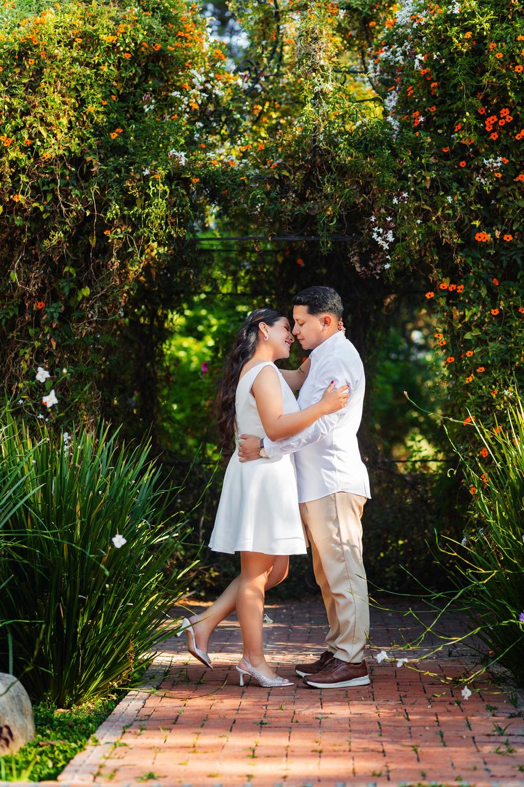
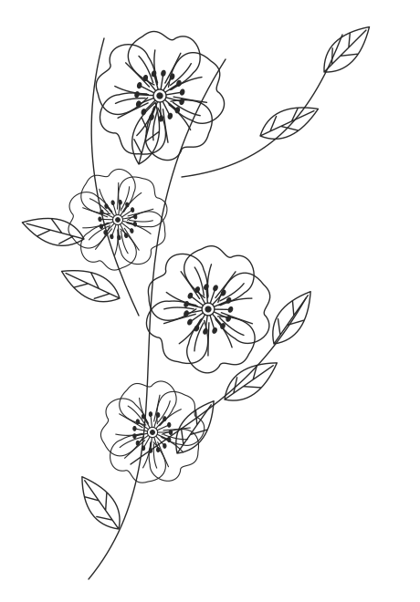
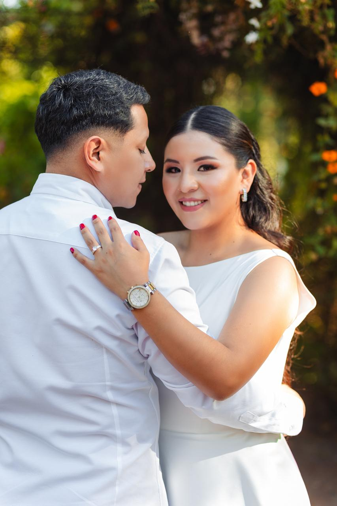

PRIMER DÍA · SÁBADO
03OCTUBRE
16:00
Salón de Eventos «EVA»
Av. Siglo XX, Zona Sud
Cómo llegar

CON AMOR, PARA TI
03 · 04 · 05 OCTUBRE 2026
Tres días para celebrar.
Toda una vida para amarnos.
CON LA BENDICIÓN DE DIOS
Nos casamos
Elegimos caminar juntos,
compartir nuestros sueños
y hacer del amor nuestro hogar.

Un sí que nace del corazón,
una historia que comienza para siempre.
CON LA BENDICIÓN DE NUESTROS PADRES
Sr. Edwin Rolando Villarroel Moreno
Sra. Carmen Rosa Vera Quinteros
Sr. Primo Choquenaria
Sra. Delfina Choque
Gracias por enseñarnos que el amor se construye
con paciencia, ternura y pequeños gestos cada día.
RESERVA ESTOS DÍAS
3, 4 y 5 de octubre
Para comenzar a celebrar nuestro amor
EL COMIENZO DE NUESTRO PARA SIEMPRE
12:30
Parroquia Nuestro Señor de Exaltación de la Recoleta
Avenida Pando
DESPUÉS DEL SÍ, LA ALEGRÍA DE COMPARTIR
Tres días, muchas sonrisas
y recuerdos que guardaremos para siempre.
PRIMER DÍA · SÁBADO
16:00
Av. Siglo XX, Zona Sud
Cómo llegarSEGUNDO DÍA · DOMINGO
17:00
Av. Siglo XX, Zona Sud
Cómo llegarTERCER DÍA · LUNES
16:00
Av. Cañada Cochabamba,
esq. Av. Cornelio Saavedra
PERSONAS ESPECIALES EN NUESTRA HISTORIA
Ing. Jhonny Tapia Guzmán
Lic. Senayda Alvarez de Tapia
Sr. Freddy Balladares Fernandez
Sra. Norah Hidalgo Zegovia
Ing. Jhonny Donaire Galean
Lic. Roxana Nina Sanchez
Sr. Jhonny Garcia Vera
Sra. Nancy Cruz de Garcia
Sr. Elmer Rojas Andrade
Sra. Vanessa Soto Galindo
El amor se vuelve más grande
cuando lo celebramos con quienes queremos.
CON MUCHO CARIÑO Y RESPETO
Amamos a los niños y queremos que ustedes disfruten y bailen sin parar; es por eso que la invitación es solo para adultos.
Gracias por acompañarnos y comprender este deseo.
UN DETALLE CON AMOR
Tu presencia y tus buenos deseos son nuestro mejor regalo. Si deseas hacernos un presente, puedes hacerlo a este QR. Estaremos muy agradecidos.
TU PRESENCIA SERÁ NUESTRO MEJOR REGALO
Confirma tu asistencia y cuéntanos
quiénes te acompañarán y qué días asistirán.
¿Tienes alguna duda?
Escríbenos por WhatsApp ↗